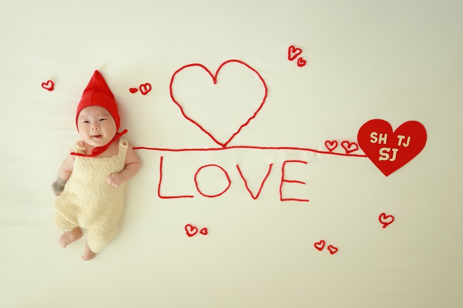

신생아 때의 서준이
태어나서 조리원을 거쳐, 처음 집에 오기까지.
OUR FAMILY ARCHIVE
처음 만난 날의 설렘부터
함께 웃었던 평범한 하루까지.
서준이의 소중한 순간을 담아둡니다.

너와 함께하는 모든 처음을 기억해.
01 / PHOTO DIARY
시간이 지나도, 이 순간의 온도는 그대로.
 우리, 셋이 된 날들.
우리, 셋이 된 날들.02 / HELLO, SEOJUN
2019년 5월 4일,
엄마 아빠에게 찾아온 작은 선물.
시간이 지날수록 발전하며,
많은 사람이 공경하고 우러러보는 사람.
내 이름에는 이런 마음이 담겨 있어요.
언젠가 네가 이 기록을 펼쳐볼 때,
얼마나 사랑받았는지 알 수 있기를.